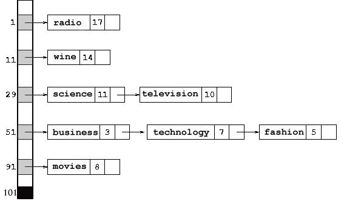

put(key,value); add a key/value pair or replace value for existing key get(key); retrieve value for a given key (null if no such key)Like the Set interface, the Map interface has stronger extensions: SortedMap<K,V> and NavigableMap<K,V>. Also like sets, there are three Map implementation classes of interest to us:
- HashMap<K,V>: An implementation of Map in which no particular ordering of elements is maintained.
- LinkedHashMap<K,V>: An implementation of Map in which the the entry order of elements is maintained.
- TreeMap<K,V>: An implementation of NavigableMap<K,V> in which the elements are maintained sorted by the key component.
Map Demo Program
Instead of creating a new project, it is easiest to use either of the NetBeans projects TreeDemo or HashDemo created in previous documents and run this as one of the main programs.Map<String, Integer> people = new TreeMap<String, Integer>(); //Map<String, Integer> people = new HashMap<String, Integer>(); //Map<String, Integer> people = new LinkedHashMap<String, Integer>();
- You can have null values, which unfortunately, can obfuscate the interpretation of the return values of put, get, and remove.
- The put(key,value) operation either adds a new (key,value) pair or resets the value. It also returns the old value, or null if the key pair was newly added. If null values are permitted then we cannot use the return value as a determination of successful addition.
- The get(key) operation returns the associated value and null if the key does not exist. If null values are used, then we need to use the boolean containsKey(key) operation to tell for sure if a key is present.
- The remove(key) operations removes an existing (key,value) pair and returns the value. If the key is not found then null is returned. Similar to the situation with put, if null values are permitted then we cannot use the return value as a determination of successful deletion.
- The functions keySet (returning a Set) and values (returning a Collection) allow you to separate keys and values of a Map.
- You can iterate over a Map using on either the keys or the entries themselves. If both keys and values are desired, it is more efficient to iterate over the entries (an O(n) operation) than the by using the keys and retrieving the values (an O(n*log(n)) operation in TreeSets).
A Map is more general than a Set
A map can be used to implement a set. Java actually does this implicitly while other languages like Php, Perl, etc. require that you do so explicitly. For example, think of implementingSet<String> s = ....
Map<String,Integer> m = ...
"politics", "beer", "afterlife", "theater"translates into the presence of these pairs in the map:
("politics",1), ("beer",1), ("afterlife",1), ("theater",1)
The crucial thing is that an element which is in the set appears
with a non-null value in the corresponding map.
The translation of operations is this using the boolean
stat variable:
Set Map --- --- stat = s.contains(some_string) stat = (m.get(some_string) != null) stat = s.add(some_string) stat = (m.put(some_string,1) == null) stat = s.remove(some_string) stat = (m.remove(some_string) != null)In particular, the non-null values returned by get, put, and remove can be interpreted as the presence of a key element.
TreeMap Implemementation
Our implementation of a TreeMap is similar to that of a SearchTreeSet. The only difference is that the nodes hold a (key,value) pair instead of single data value. A key, which can occur only once in the tree takes on the role of the element in TreeSet. In the binary tree implementation, we maintain the following ordering property at each node:| keys of all nodes in the left subtree of node n |
< | key at node n |
< | keys of all nodes in the right subtree of node n |
Required Support Classes
-
This one was used in for SearchTreeSet in the TreeDemo project:
Class Name: SetAdapter package: set
-
This too was used in for SearchTreeSet in the TreeDemo project:
Class Name: Mutable package: util
-
The is new to this document:
Class Name: MapAdapter package: map
-
The is new to this document:
Class Name: NavMapAdapter package: map
-
The implementation class is this:
Class Name: SearchTreeMap package: tree
Test this implementation
Once these are installed you can use the first mainMapOpsDemo program above to do a (partial) test by using this definition:Map<String, Integer> people = new SearchTreeMap<String, Integer>();
SearchTreeMap Details
It's useful to compare what we're doing here with the SearchTreeSet class discussion in the TreeSets document. The SearchTreeMap nodes are defined by this inner class:private class Node { K key; V value; Node left, right; Node(K key, V value, Node left, Node right) { this.key = key; this.value = value; this.left = left; this.right = right; } }
private Node root = null; private int size = 0; private Comparator<? super E> cmp = null;
@Override public V put(K key, V value) { Mutable<Boolean> found = new Mutable<Boolean>(); Mutable<V> oldvalue = new Mutable<V>(); root = put(root, key, value, found, oldvalue); if (!found.get()) { ++size; } return oldvalue.get(); } private Node put(Node n, K key, V value, Mutable<Boolean> found, Mutable<V> oldvalue) { if (n == null) { found.set(false); oldvalue.set(null); return new Node(key, value, null, null); } int comp = myCompare(key, n.key); if (comp < 0) { n.left = put(n.left, key, value, found, oldvalue); return n; } if (comp > 0) { n.right = put(n.right, key, value, found, oldvalue); return n; } // else comp == 0, i.e. you found it oldvalue.set(n.value); n.value = value; found.set(true); return n; } @Override public V get(Object obj) { K key = (K) obj; return get(key, root); } private V get(K key, Node n) { if (n == null) { return null; } int comp = myCompare(key, n.key); if (comp < 0) { return get(key, n.left); } if (comp > 0) { return get(key, n.right); } return n.value; }
HashMaps
The HashMap and LinkedHashMap follow the same structure as HashSet and LinkedHashSet. Use the HashDemo project started in the HashSets document for testing.Demo program
In particular, start with this simple main function. Add it to the Main class:public static void main(String[] args) { //... mainRegularLinkedHashMaps(args); }
Implementation
The user-defined OpenHashMap is an open-hashing implementation of the Map interface defining the most basic functions in the spirit of the OpenHashSet from the HashSets document. These are the relevant classes:Class Name: MapAdapter package: mapwith the following content:
Class Name: OpenHashMap package: hashwith the following content:
private class Node<K,V> { K key; V value; Node next; Node(K key, V value, Node next) { this.key = key; this.value = value; this.next = next; } }
(fashion,5), (radio,17), (technology,7), (television,10), (movies,8), (business,3), (wine,15), (science,11)A depiction of the internal structure using our implementation would be this:

Underlying our public functions is the search helper function
which locates the correct pointer in the node chain for a given
key (or null if not found).
private Node search(Object obj) { int index = hash(obj); Node n = bucket[index]; while (n != null) { if ( n.key.equals(obj) ) { break; } n = n.next; } return n; }
public V put(K key, V value) { Node<K,V> foundAt = search(key); // need to template-ize type if (foundAt != null) { // key found V old_value = foundAt.value; foundAt.value = value; // replace old value return old_value; // and return it } else { ++size; if ((float)size/capacity > loadFactor) { rehash(); } int index = hash(key); bucket[index] = new Node(key, value, bucket[index]); // add the pair return null; // return null } }
public V get(Object obj) { Node<K,V> foundAt = search(obj); if (foundAt != null) { return foundAt.value; } else { return null; } }